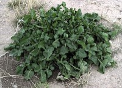

ルッコラの生産量 都道府県ランキング
1位から3位までと、とれた量
ルッコラが日本でいちばん多くとれるのは埼玉県です。51 tで、全国（157 t）の32%を占めます。

| 順位 | 都道府県 | 収穫量 | 全国に占める割合 |
|---|---|---|---|
| 1位 | 埼玉県 | 51 t | 32% |
| 2位 | 茨城県 | 25 t | 16% |
| 3位 | 福岡県 | 17 t | 11% |
この数字について
- 分類：アブラナ科
- 全国の収穫量：157 t
- この数字が表すもの：収穫量（畑や田でとれた重さ）
- 調査：地域特産野菜生産状況調査 令和4年産
- 19県分を調査（調査していない県は順位に入りません）
ルッコラの生産量について、よくある質問
- ルッコラの生産量が日本一の都道府県はどこですか？
- 埼玉県です。地域特産野菜生産状況調査（令和4年産）で51 tでした。
- ルッコラの生産量ランキング2位・3位はどこですか？
- 2位は茨城県（25 t）、3位は福岡県（17 t）です。
- ルッコラの全国の生産量はどれくらいですか？
- 157 t（令和4年産）です。